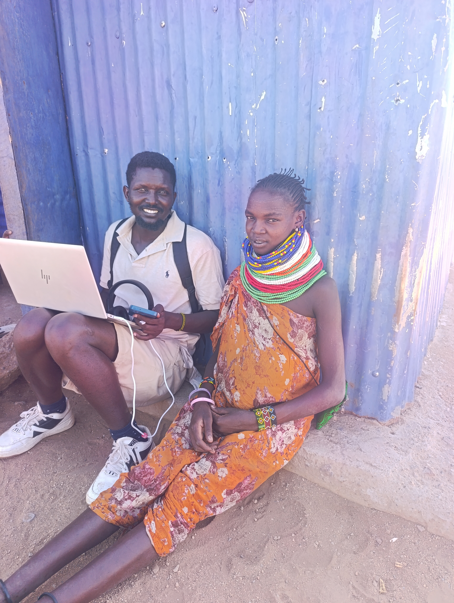

Born from the land. Led by the people. Reclaiming our future in Turkana West.
TULRI was not born in a boardroom. It was born on the drying banks of the Nanam River and in the thorn-choked plains of Natamakarwo.
For generations, our elders knew the rhythms of this land. But in recent years, Prosopis juliflora (the Etirae) spread like a silent fire. It didn't just kill the grass; it blocked our roads, injured our livestock, and forced our youth into dangerous, contested territories just to find pasture.
We watched as outside interventions failed because they didn't understand the community. We realized that if our land was going to be saved, we had to be the ones to save it.
The Turkana Livelihoods & Restoration Initiative (TULRI) was formed by local community members, grazing committee elders, and youth who refused to watch our heritage disappear. We are here to clear the thickets, create sustainable livelihoods from the very weed that threatens us, and restore peace to our borders.

To lead community-driven efforts in clearing invasive Prosopis, transforming it into sustainable livelihoods, and restoring ecological balance and peace in Turkana West.
A restored, prosperous, and peaceful Turkana West where communities thrive on healthy rangelands, free from the threat of invasive species.
We do not impose solutions. We build them with the elders, women, and youth who live this reality every day.
We see value where others see a weed. Every cleared stem and pod is transformed into fuel, feed, or timber.
Restoring land is restoring peace. We reopen migratory routes to reduce resource conflicts at the border.
We share our data, our challenges, and our financials openly with our community and our partners.
We don't just clear Prosopis; we transform it. By utilizing every part of the plant, we create sustainable value while protecting native ecosystems.
Prosopis blossoms are a premium, year-round nectar source. We support local beekeepers in producing high-quality "Etirae Honey," providing income even during severe droughts.
Converted biomass provides a clean, long-burning alternative to traditional charcoal. This reduces indoor air pollution for women and children while saving native Acacia trees.
Crushed pods are boiled or roasted to destroy anti-nutritional factors and sterilize seeds. This creates a safe, protein-rich dry-season feed that does not spread the weed.
The dense, durable wood is ideal for constructing strong fencing poles (bomas), furniture, and building materials, reducing pressure on indigenous forests.
"TULRI is not an outside organization coming to tell us what to do. They are our sons and daughters. They understand that clearing the Etirae is the only way our children will inherit a living land."— Lokwang'ae, Grazing Committee Elder, Turkana West
We have the local knowledge and the will to reclaim our land. Partner with us to provide the tools, training, and scale this movement needs.